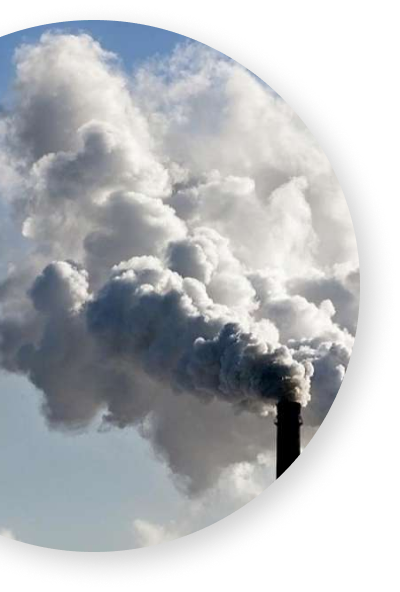
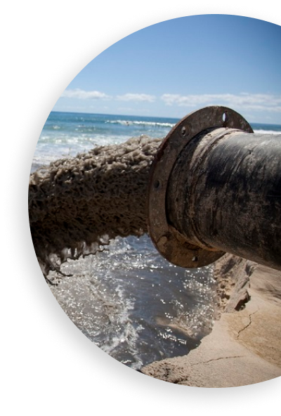
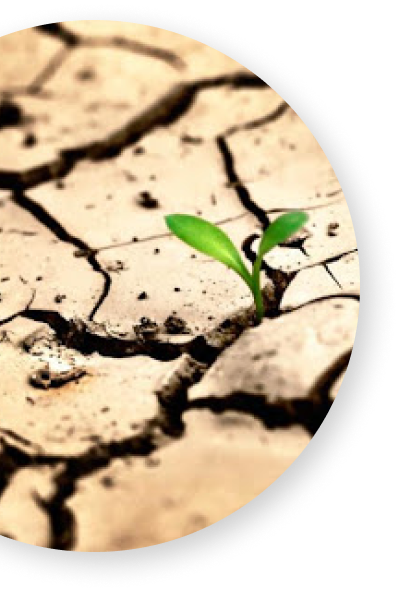
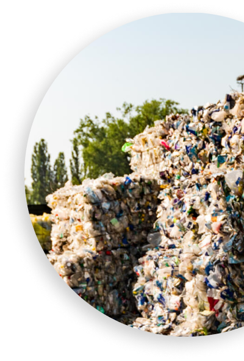
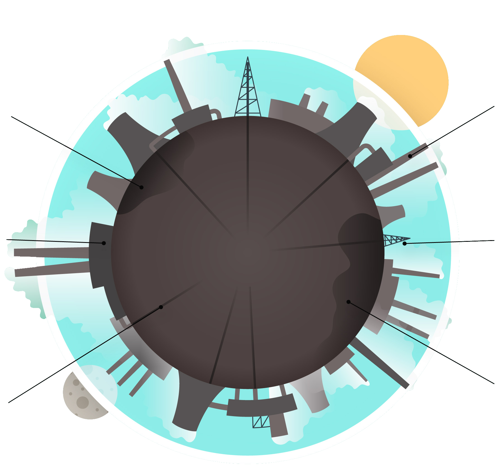

Ми живемо на самому дні блакитного повітряного океану Землі - її атмосферного шару. Земля - це наш дім. А який він? Французький географ Елізе Реклю дуже влучно сказав: "Людина створює навколишнє середовище по своєму образу і подобі". Тобто ми маємо навколишнє середовище яке заслужили.

Певно найбільші наслідки для екології завдає саме забруднення повітря. Світове господарство щорічно викидає в атмосферу більше 15 млрд. т. вуглекислого газу, 200 млн. т. оксиду вуглецю, понад 500 млн. т. вуглеводнів, 120 млн. т. золи та ін. Загальний обсяг викидів забруднюючих речовин в атмосферу становить більше 19 млрд. т.

З давніх-давен люди виливали відходи у річку чи озеро не надаючи цьому великого значення. Зараз масштаби виробництва зросли настільки, що цей фактор почав значно впливати на екологію водойми де збувають відходи.

Екологічна проблема тісно переплітається з проблемою перенаселення. Яскраво це проявляється саме у деградації грунту. Задля збільшення врожайності, щоб забезпечити їжею більшу кількість людей, землю підживлюють мінералами штучного походження, це збільшує врожайність на деякий час але негативно впливає на грунт.

На сьогоднішній день сучасна людина споживає в рази більше, ніж його предки. Щороку обсяги споживання зростають, а разом з ними зростає і кількість відходів. Частина країн вже зробили певні кроки після усвідомлення всієї небезпеки забруднення побутовими відходами, але в більшості, на жаль, ситуація не змінюється.
Біосфера землі розвивалась і урівноважувалась протягом міліонів років. Поки люди не внесли свої поправки...
В тихому океані скупчилась величезна маса сміття (близько 100 млн. т.) що зноситься сюди течіями.
Хоч він і не розкладається, якщо його правильно утилізувати, він допоможе нам більше ніж будь який інший матеріал.

Більшість вважає що в майбутньому екологічні проблеми можуть призвести до економічної кризи, серйознішої ніж у 2019 році.
Лишень близько 1% води годиться для використання, все інше - солона або заморожена.
Дуже популярною є думка що для бородьби з засміченням потрібно переходити на тару з вищеперечислених матеріалів. Але їх використання призведе до більшої проблеми.